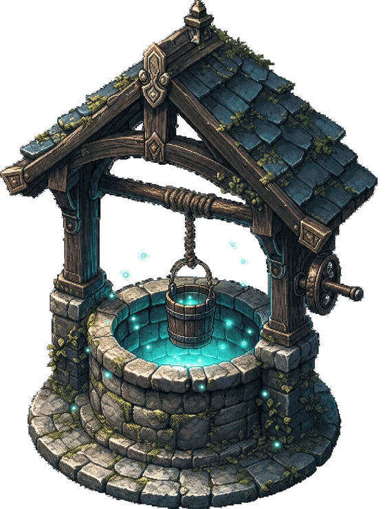

Step 1Think
The first signal
Check whether the need already has an answer.
Before building, describe the problem in VibeWell. It surfaces software that already exists; when nothing fits, the unmet need becomes a public wish worth examining.
- Existing-solution scan
- Unmet-need signal
- Market conversation starter
Vibe Well Open ↗
Find the app.
Or wish it into being.
